Real photographs from Wikimedia Commons, used under the licences below. Photos represent dish styles; ingredients, brands and serving sizes may differ. No restaurant or photographer endorsement is implied.
Each photo was cropped square, resized and compressed to WebP. Adapted images retain their source licence, including ShareAlike where applicable. The MIT licence for application code does not replace these image licences.
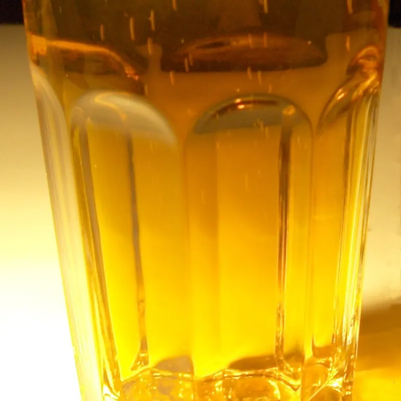
Photo by odder · Original and source information · CC BY 2.5
Square crop, resize and WebP compression; adaptation under the same licence.
Local files: beer.webp, dish-chi-in-u-draft-beer-1-7c4b3182.webp, dish-chi-in-u-light-beer-1-135745db.webp, dish-chi-in-u-light-beer-1-ecfe4ce4.webp, dish-corona-extra-1-e05e6bcb.webp, dish-efes-non-alcoholic-1-d3bfc259.webp, dish-efes-pilsner-beer-1-7df0a353.webp, dish-finch-beer-1-74fa6ae2.webp, dish-franziskaner-weissbier-1-3b8dac8d.webp, dish-kozel-ern-beer-1-6316c12a.webp, dish-kozel-svetly-1-dbccec99.webp, dish-timi-oreana-1-4a06a278.webp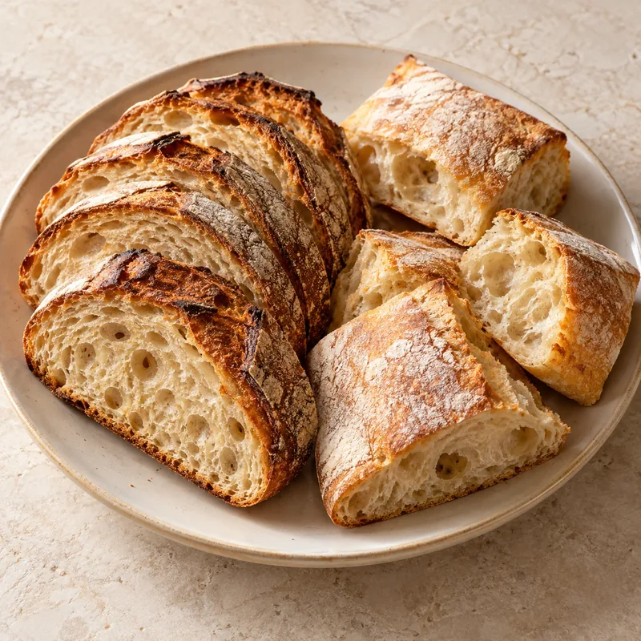
Photo by Laurent van Roy · Original and source information · CC BY 2.5
Square crop, resize and WebP compression; adaptation under the same licence.
Local files: bread.webp, dish-bread-rusks-1-e79a7275.webp, dish-ciabatta-1-a006558d.webp, dish-ciabatta-1-eec2c5c4.webp, dish-flatbread-with-butter-and-garlic-sheep-cheese-1-79c02139.webp, dish-flatbread-with-butter-and-sheep-cheese-1-a499de4b.webp, dish-hot-bread-1-8cb6c993.webp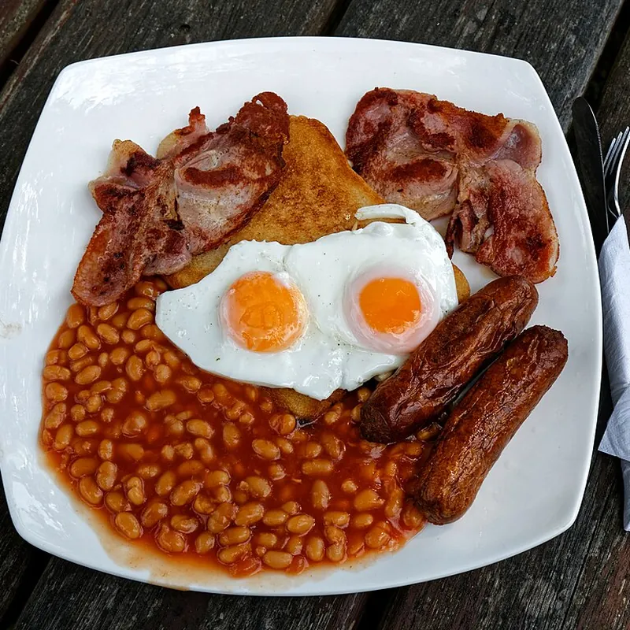
Photo by Acabashi · Original and source information · CC BY-SA 4.0
Square crop, resize and WebP compression; adaptation under the same licence.
Local files: breakfast.webp, dish-andy-s-breakfast-2-129d46dc.webp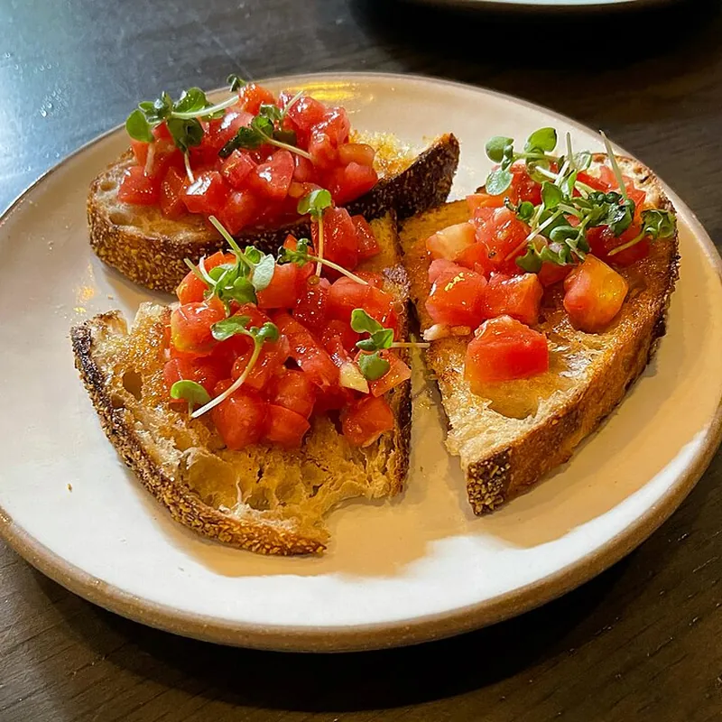
Photo by Missvain · Original and source information · CC BY 4.0
Square crop, resize and WebP compression; adaptation under the same licence.
Local files: bruschetta.webp, dish-bruschetta-selection-1-8f1a2585.webp, dish-bruschettas-with-shrimp-3-311f09de.webp, dish-roasted-pepper-bruschetta-2-7d475d5a.webp, dish-salmon-bruschetta-3-4d6018e3.webp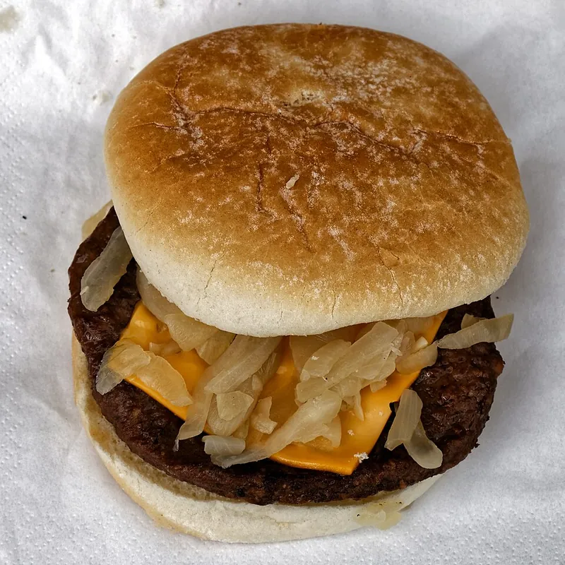
Photo by Acabashi · Original and source information · CC BY-SA 4.0
Square crop, resize and WebP compression; adaptation under the same licence.
Local files: burger.webp, dish-beef-burger-2-a6eecd8c.webp, dish-maxi-burger-1-fc613e81.webp, dish-mini-burger-1-733d2e16.webp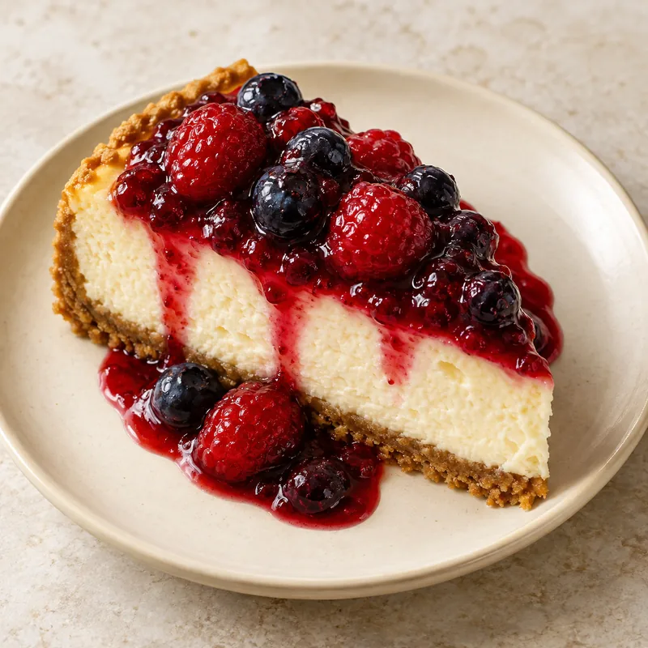
Photo by No machine-readable author provided. Scarlight assumed (based on copyright claims). · Original and source information · CC BY-SA 2.5
Square crop, resize and WebP compression; adaptation under the same licence.
Local files: cheesecake.webp, dish-berry-cheesecake-1-d04e094f.webp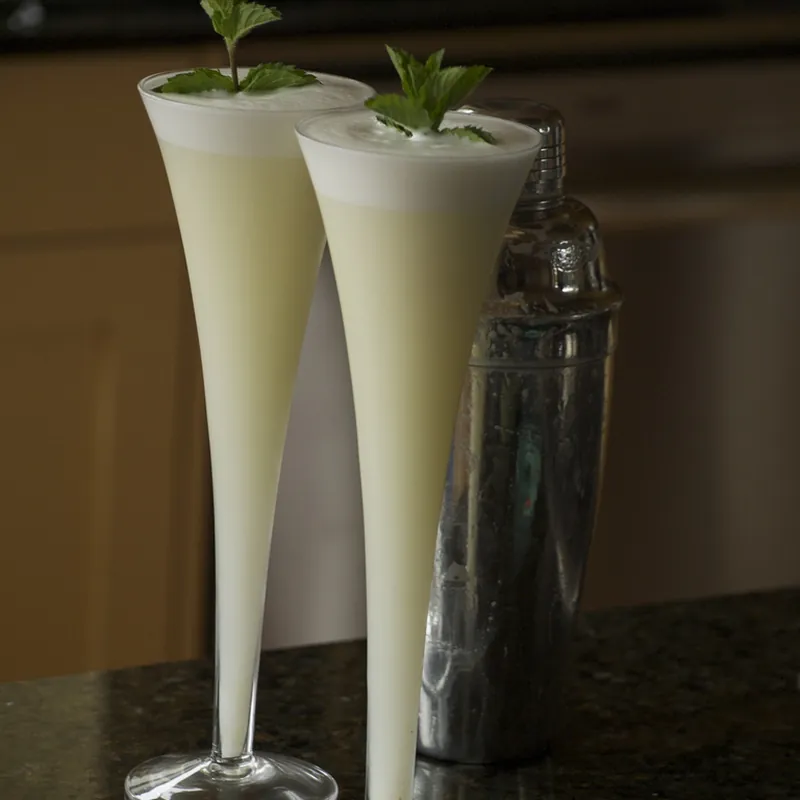
Photo by mkorcuska · Original and source information · CC BY-SA 2.0
Square crop, resize and WebP compression; adaptation under the same licence.
Local files: cocktail.webp, dish-aperol-spritz-cocktail-1-8e08aa29.webp, dish-aperol-spritz-cocktail-1-bf58934e.webp, dish-cherry-pepsi-cocktail-1-824023e0.webp, dish-gin-tonic-1-5cfdef79.webp, dish-sex-on-the-beach-1-3bb2ea85.webp, dish-tropical-cocktail-1-1fe5dde2.webpPhoto by Julius Schorzman · Original and source information · CC BY-SA 2.0
Square crop, resize and WebP compression; adaptation under the same licence.
Local files: coffee.webp, dish-americano-1-b6e991a0.webp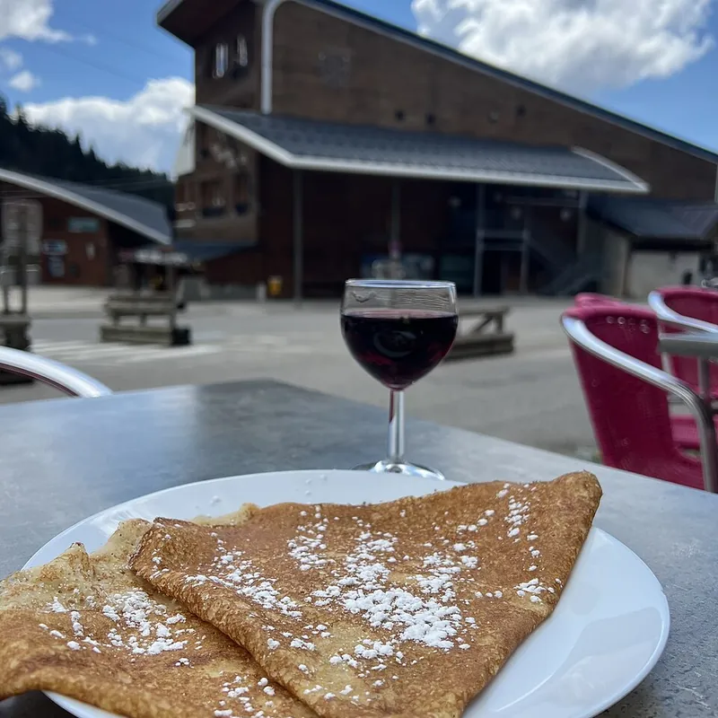
Photo by Sharon Hahn Darlin · Original and source information · CC BY 2.0
Square crop, resize and WebP compression; adaptation under the same licence.
Local files: crepes.webp, dish-crepes-with-salmon-and-spinach-3-d7d7d0aa.webp, dish-crepes-with-salted-salmon-1-b724d710.webp, dish-pancakes-with-chicken-mushroom-sauce-2-7fdc47ef.webp, dish-pancakes-with-sweet-cheese-and-sauce-1-8be9c10b.webp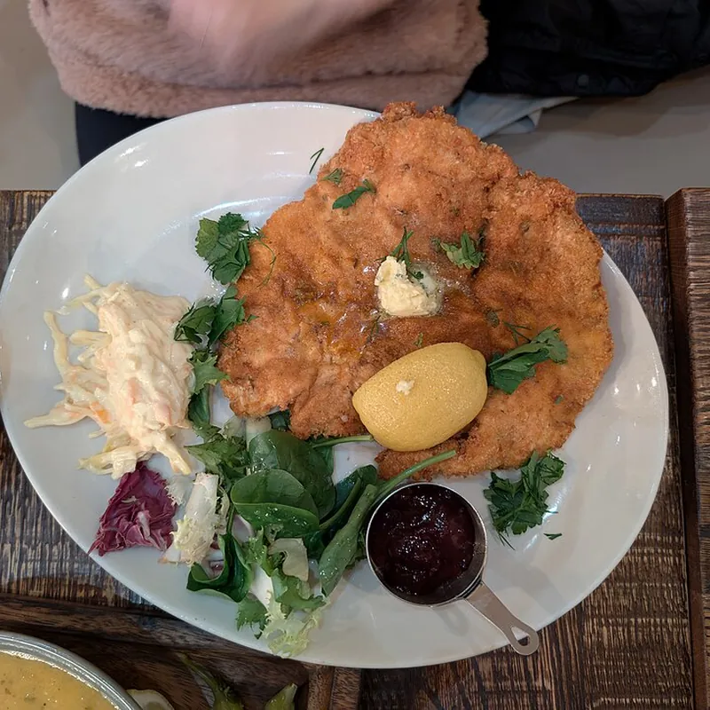
Photo by Andy Li · Original and source information · CC0
Square crop, resize and WebP compression; adaptation under the same licence.
Local files: crispy-chicken.webp, dish-breaded-chicken-breast-1-cbfd0c0c.webp, dish-chicken-schnitzel-with-mashed-potatoes-1-cd3dc8e6.webp, dish-crispy-chicken-schnitzel-3-17a79b34.webp, dish-crispy-schnitzel-for-sharing-1-24b8e0a8.webp, dish-mini-nuggets-with-potato-emoticons-1-f99dea4b.webp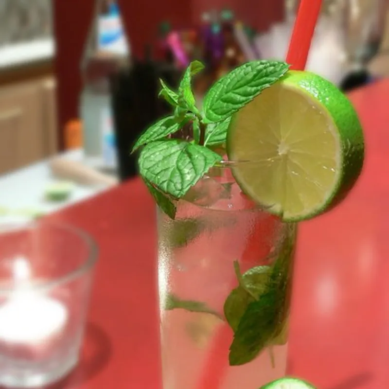
Photo by Keno März · Original and source information · CC BY 2.5
Square crop, resize and WebP compression; adaptation under the same licence.
Local files: dish-alcoholic-mojito-cocktail-1-bce289f5.webp, dish-mojito-cocktail-1-f419c136.webp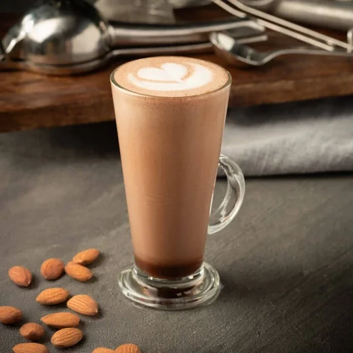
Photo by PapiPijuan · Original and source information · CC BY-SA 4.0
Square crop, resize and WebP compression; adaptation under the same licence.
Local files: dish-almond-hot-cocoa-1-0ec2e10a.webp, dish-hot-cocoa-1-05e6b71f.webp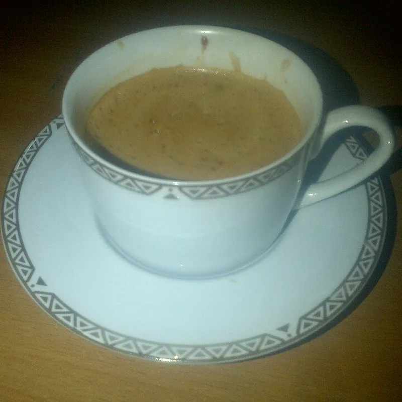
Photo by Posma766hi · Original and source information · CC BY-SA 4.0
Square crop, resize and WebP compression; adaptation under the same licence.
Local files: dish-almond-latte-1-0253859c.webp, dish-coffee-latte-1-76cde390.webp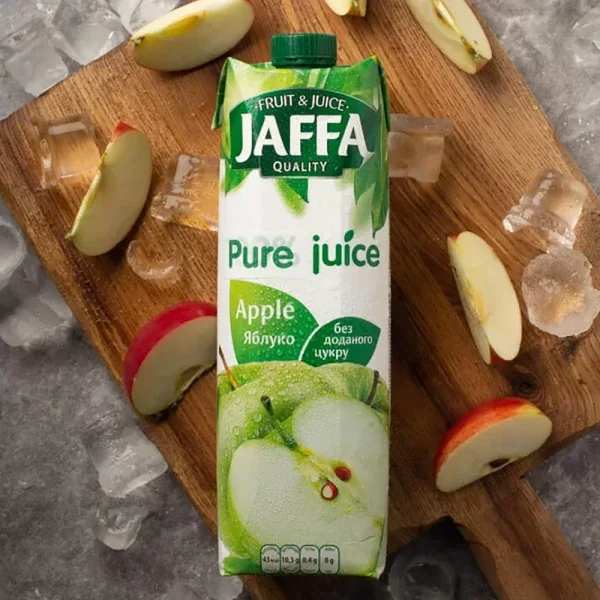
Photo by Rmhermen; cropped by Yareite · Original and source information · CC BY-SA 3.0
Square crop, resize and WebP compression; adaptation under the same licence.
Local files: dish-apple-juice-1-0b19b678.webp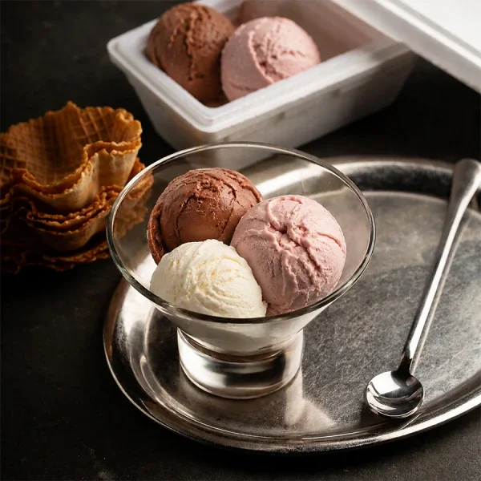
Photo by https://www.flickr.com/photos/ladyous/ · Original and source information · CC BY-SA 2.0
Square crop, resize and WebP compression; adaptation under the same licence.
Local files: dish-assorted-ice-cream-3-scoops-1-1e6cd00b.webp, dish-banana-pineapple-ice-cream-1-ad254c01.webp, dish-classic-plombir-ice-cream-2-456856ee.webp, dish-forest-berry-ice-cream-1-b1ed922f.webp, dish-hazelnut-ice-cream-1-15bf7369.webp, dish-huba-buba-ice-cream-1-649097e0.webp, dish-ice-cream-assortment-1-1478a0b1.webp, dish-ice-cream-assortment-1-8d8cd883.webp, dish-mango-passion-fruit-ice-cream-1-b36d815f.webp, dish-nghetata-snickerrss-1-a1ef19c6.webp, dish-passion-fashion-ice-cream-1-90f42bd3.webp, dish-passion-fashion-ice-cream-1-d6b35a9d.webp, dish-snikers-pop-ice-cream-1-71710a1e.webp, dish-sunny-tropic-ice-cream-1-1654bfd1.webp, dish-sweet-cookies-ice-cream-1-62f28b0d.webp, dish-whipped-cream-ice-cream-1-b1623a53.webp, ice-cream.webp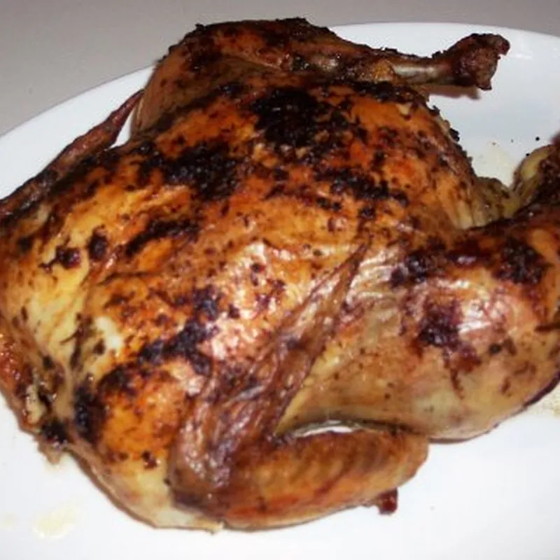
Photo by Unnamed photographer (online friend credited by uploader H Padleckas) · Original and source information · CC BY-SA 3.0
Square crop, resize and WebP compression; adaptation under the same licence.
Local files: dish-baked-chicken-steak-with-buckwheat-and-mushrooms-1-0589dc10.webp, dish-chicken-breast-with-potato-gratin-4-ff4a9741.webp, dish-chicken-fricassee-2-cdae7d8c.webp, dish-xxl-chicken-fillet-2-4a6831a6.webp, roast-chicken.webp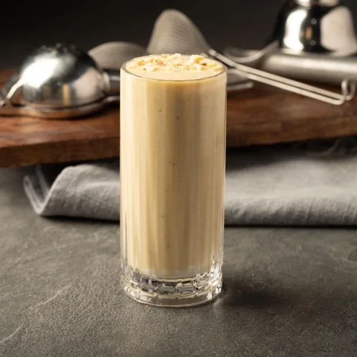
Photo by NickSS from London · Original and source information · CC BY 2.0
Square crop, resize and WebP compression; adaptation under the same licence.
Local files: dish-banana-mango-milkshake-1-c177ceed.webp, dish-salted-caramel-1-cd7a4099.webp, dish-vanilla-milkshake-1-38f2bb75.webp, milkshake.webp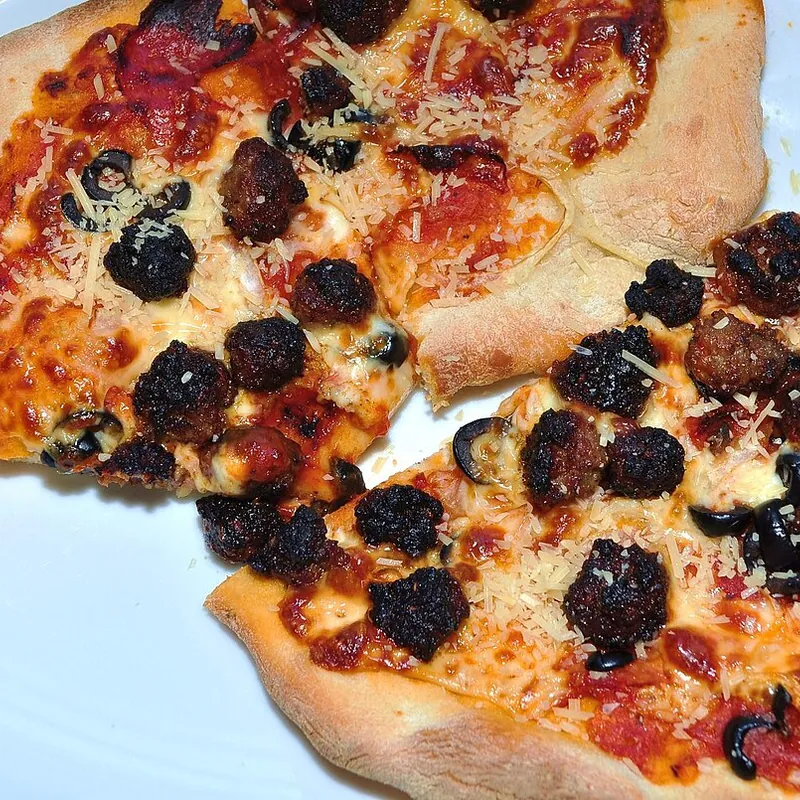
Photo by jeffreyw · Original and source information · CC BY 2.0
Square crop, resize and WebP compression; adaptation under the same licence.
Local files: dish-barbeque-pizza-2-3b87734c.webp, dish-pizza-salsicia-1-9fd4da8a.webp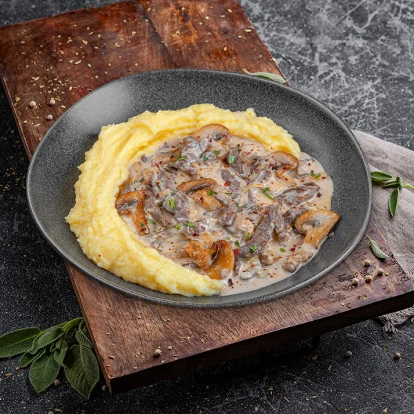
Photo by benketaro · Original and source information · CC BY 2.0
Square crop, resize and WebP compression; adaptation under the same licence.
Local files: dish-beef-stroganoff-1-c701299b.webp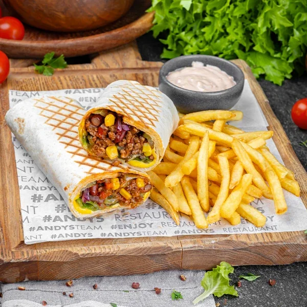
Photo by Andy Li · Original and source information · CC0
Square crop, resize and WebP compression; adaptation under the same licence.
Local files: dish-beef-wrap-3-d5dcb655.webp, dish-chicken-gyros-1-db972f81.webp, dish-chicken-wrap-4-ac294e86.webp, dish-wrap-veggie-falafel-4-2cd051e4.webp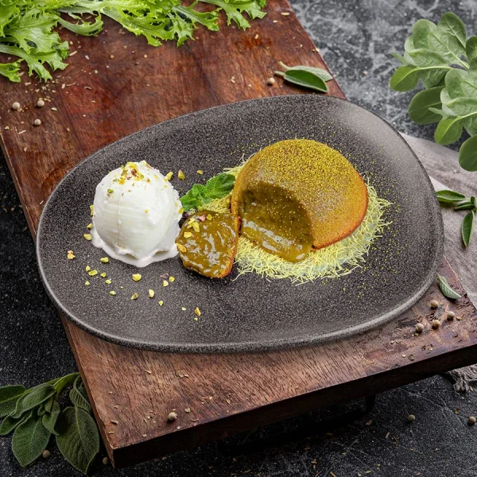
Photo by permission given by the author Dennis Mojado by email to use the above copyright tags · Original and source information · CC BY 2.0
Square crop, resize and WebP compression; adaptation under the same licence.
Local files: dish-berry-souffl-1-26eb51f6.webp, dish-berry-souffl-2-2f9476ec.webp, dish-chocolate-napoleon-1-9bd59994.webp, dish-tort-profiterol-1-fb677578.webp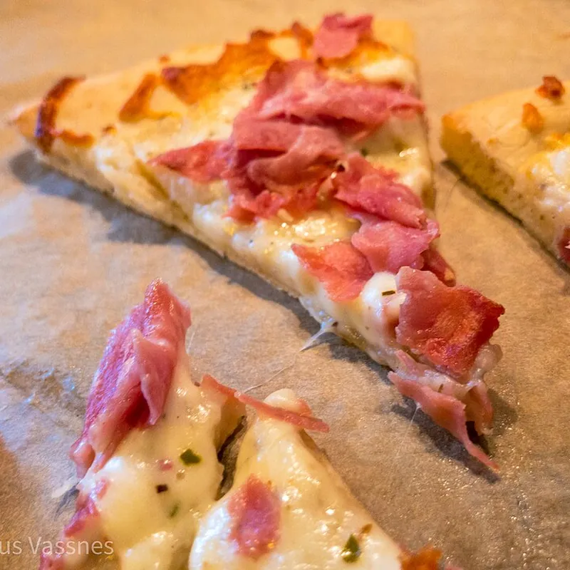
Photo by Marius Vassnes · Original and source information · CC BY-SA 4.0
Square crop, resize and WebP compression; adaptation under the same licence.
Local files: dish-bianca-pizza-2-20e6210b.webp, dish-pizza-mortadella-pistachio-1-e22fe358.webp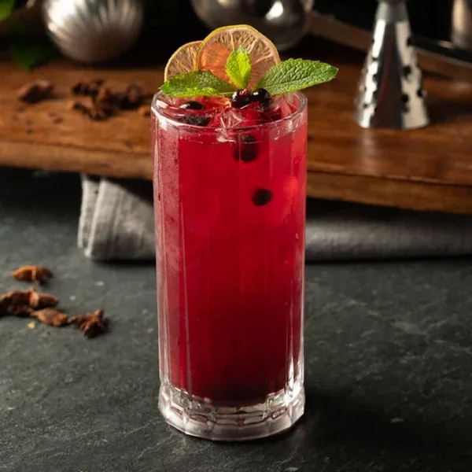
Photo by Sam Howzit · Original and source information · CC BY 2.0
Square crop, resize and WebP compression; adaptation under the same licence.
Local files: dish-blackcurrant-lemonade-1-eaec1ab4.webp, dish-lemonade-1-18c2feeb.webp, dish-lemonade-1-l-1-8bd619cb.webp, dish-passion-fruit-lemonade-1-bec56d4e.webp, dish-raspberry-fizz-lemonade-1-41bf0973.webp, lemonade.webp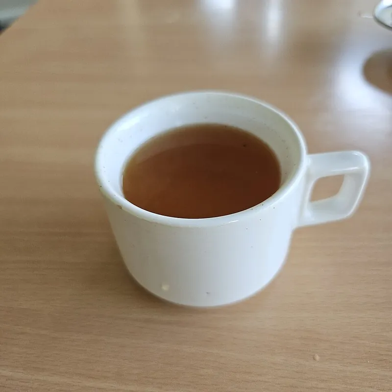
Photo by Gannu03 · Original and source information · CC BY-SA 4.0
Square crop, resize and WebP compression; adaptation under the same licence.
Local files: dish-blackcurrant-tea-1-d0eac386.webp, dish-sea-buckthorn-tea-2-ef5711a8.webp, dish-signature-mint-tea-1-887cc605.webp, tea.webp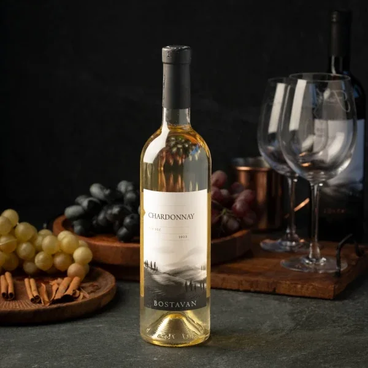
Photo by Jon Sullivan · Original and source information · Public domain
Square crop, resize and WebP compression; adaptation under the same licence.
Local files: dish-bostavan-chardonnay-white-dry-wine-1-2ba74f7e.webp, dish-cricova-crisecco-brut-1-92f8c7e9.webp, dish-purcari-nocturne-pinot-grigio-dry-wine-1-26184e79.webp, dish-purcari-nocturne-sauvignon-blanc-dry-wine-1-39620d32.webp, dish-white-wine-1-0587b066.webp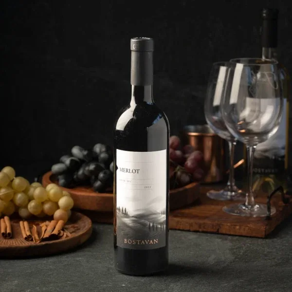
Photo by André Karwath aka Aka · Original and source information · CC BY-SA 3.0
Square crop, resize and WebP compression; adaptation under the same licence.
Local files: dish-bostavan-merlot-red-dry-wine-1-9b36365e.webp, dish-bostavan-muscat-ros-1-0c254d33.webp, dish-cricova-lacrima-dulce-1-2661d4a1.webp, dish-gl-hwein-1-7b8b0d0f.webp, dish-purcari-nocturne-cabernet-sauvignon-red-sec-1-62837af8.webp, dish-purcari-nocturne-rose-sec-1-50466b42.webp, dish-red-wine-1-59dac068.webp, dish-ros-wine-1-e49bd011.webp, wine.webp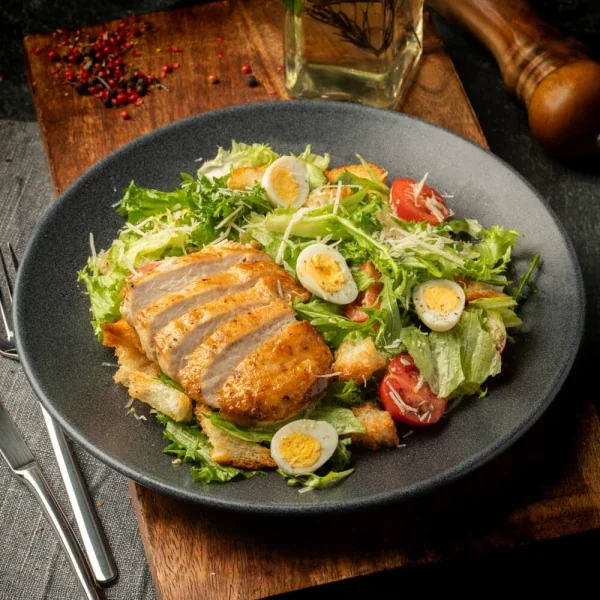
Photo by Andy Li · Original and source information · CC0
Square crop, resize and WebP compression; adaptation under the same licence.
Local files: dish-caesar-salad-with-chicken-1-52da8eb5.webp, dish-caesar-salad-with-chicken-banquet-1-e4794f4c.webp, dish-caesar-salad-with-lightly-salted-salmon-1-d2802600.webp, dish-caesar-salad-with-lightly-salted-salmon-1-ff354fd1.webp, dish-caesar-salad-with-shrimp-1-f21be3df.webp, dish-caesar-salad-with-shrimp-banquet-1-136183a9.webp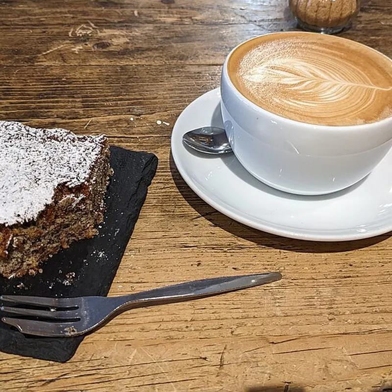
Photo by TricksterWildcat · Original and source information · CC BY-SA 4.0
Square crop, resize and WebP compression; adaptation under the same licence.
Local files: dish-cappuccino-1-9ed71327.webp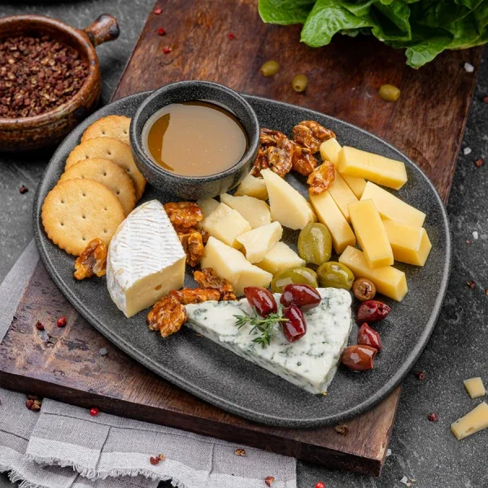
Photo by Dorina Andress; cropped by Neutrality and Foobaz; sharpened by Puffin · Original and source information · CC BY-SA 3.0
Square crop, resize and WebP compression; adaptation under the same licence.
Local files: dish-cheese-platter-1-fb000524.webp, dish-cheese-platter-2-7563212e.webp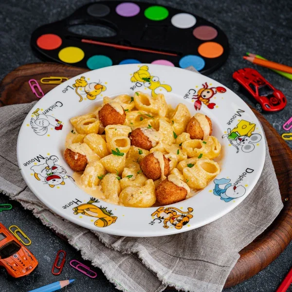
Photo by Danielle Scott · Original and source information · CC BY-SA 2.0
Square crop, resize and WebP compression; adaptation under the same licence.
Local files: dish-cheesy-pasta-nuggets-1-4ef42af9.webp, dish-pasta-pollo-2-0f1ca86c.webp, pasta.webp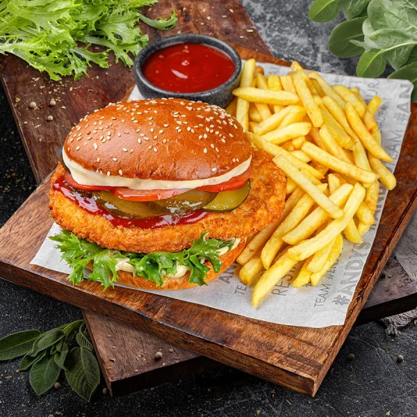
Photo by Kurt Kaiser · Original and source information · CC0
Square crop, resize and WebP compression; adaptation under the same licence.
Local files: dish-chicken-burger-2-80d0883e.webp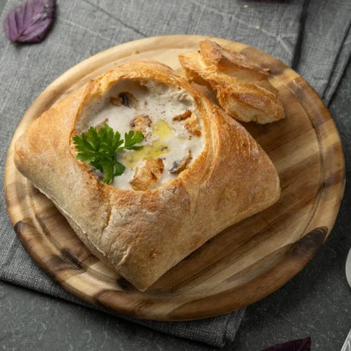
Photo by stu_spivack · Original and source information · CC BY-SA 2.0
Square crop, resize and WebP compression; adaptation under the same licence.
Local files: dish-chicken-cream-soup-1-1ed901ae.webp, dish-mexican-soup-1-23d164fe.webp, dish-soup-with-meatballs-1-51cf838e.webp, dish-zama-traditional-chicken-soup-1-dbc754de.webp, soup.webp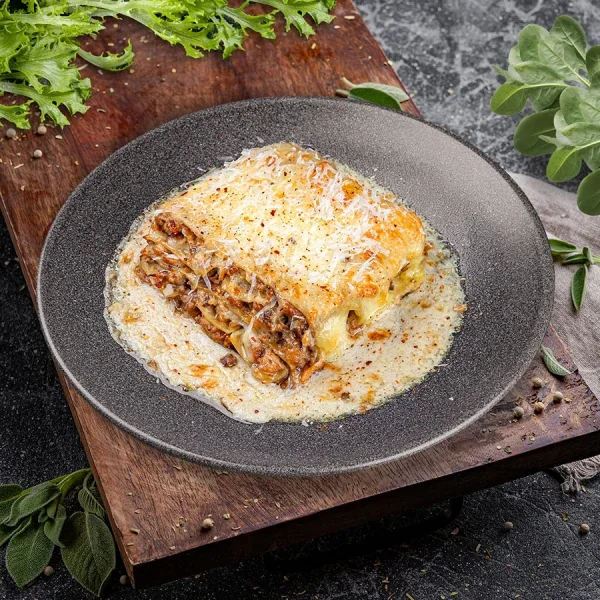
Photo by Breville USA · Original and source information · CC BY 2.0
Square crop, resize and WebP compression; adaptation under the same licence.
Local files: dish-chicken-lasagna-2-d6fbe646.webp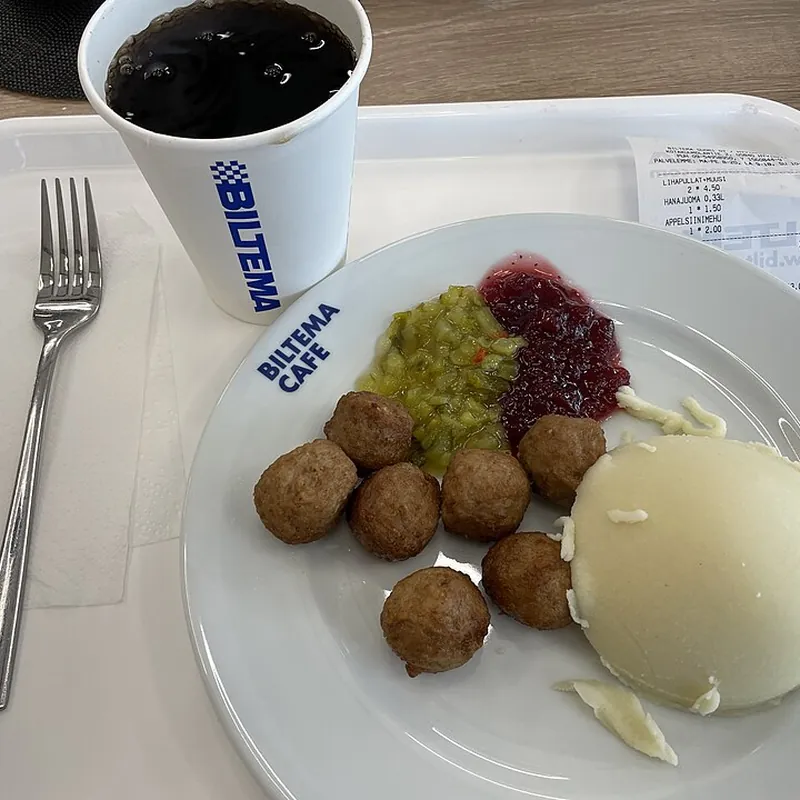
Photo by Ypsilon from Finland · Original and source information · CC0
Square crop, resize and WebP compression; adaptation under the same licence.
Local files: dish-chicken-meatballs-in-curry-sauce-with-rice-3-9a5ec4f5.webp, dish-chicken-meatballs-in-tomato-sauce-with-mashed-potatoes-2-82ef9d9c.webp, dish-mashed-potatoes-with-meatballs-1-b7b70954.webp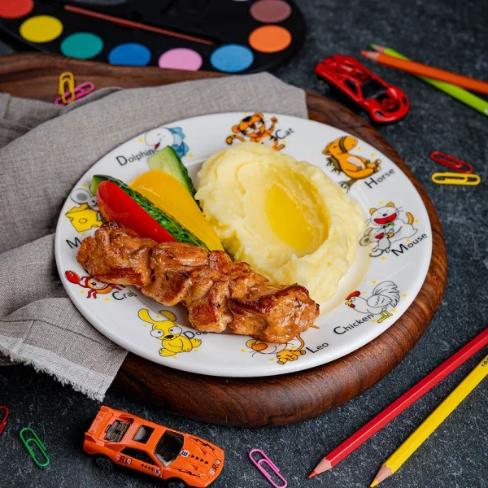
Photo by Игоревич · Original and source information · Public domain
Square crop, resize and WebP compression; adaptation under the same licence.
Local files: dish-chicken-shashlik-1-a131d370.webp, dish-chicken-skewer-3-77ea5162.webp, dish-mixed-skewers-for-sharing-1-663c4b90.webp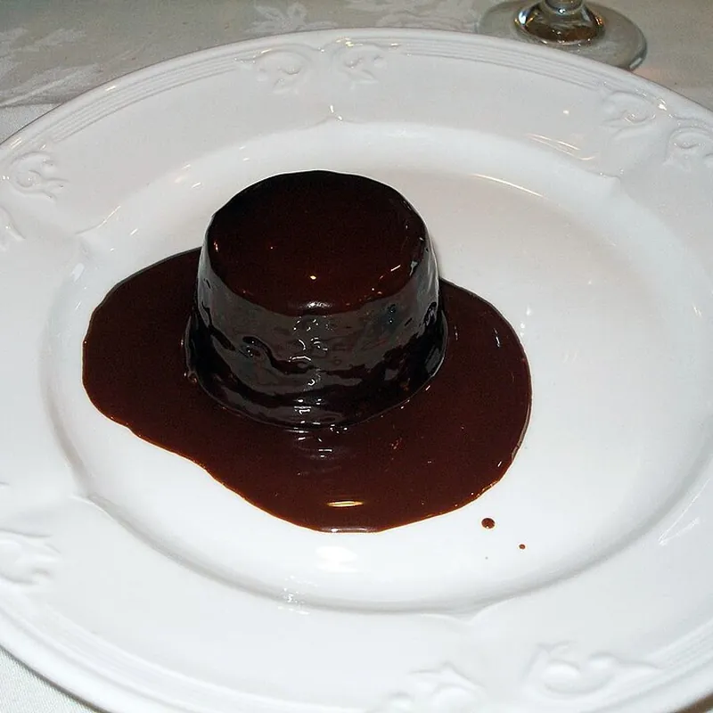
Photo by sanctumsolitude · Original and source information · CC BY 2.0
Square crop, resize and WebP compression; adaptation under the same licence.
Local files: dish-chocolate-fondant-2-975a2a05.webp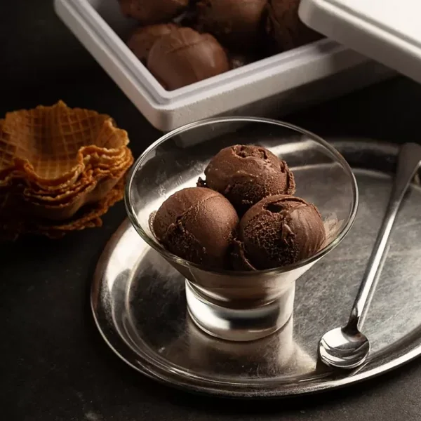
Photo by Veganbaking.net from USA · Original and source information · CC BY-SA 2.0
Square crop, resize and WebP compression; adaptation under the same licence.
Local files: dish-chocolate-ice-cream-1-85bfa745.webp, dish-chocolate-plombir-ice-cream-1-951b28ae.webp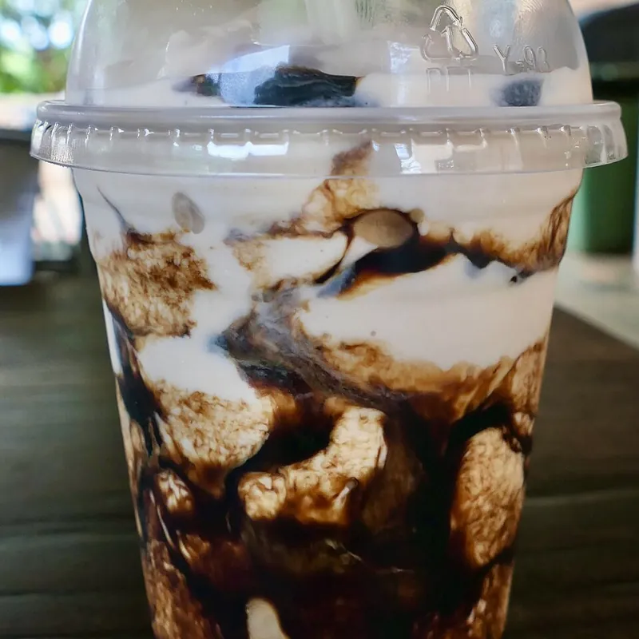
Photo by Bernard DUPONT · Original and source information · CC BY-SA 4.0
Square crop, resize and WebP compression; adaptation under the same licence.
Local files: dish-chocolate-milkshake-1-86723f2f.webp, dish-strawberry-freakshake-1-defaa64e.webp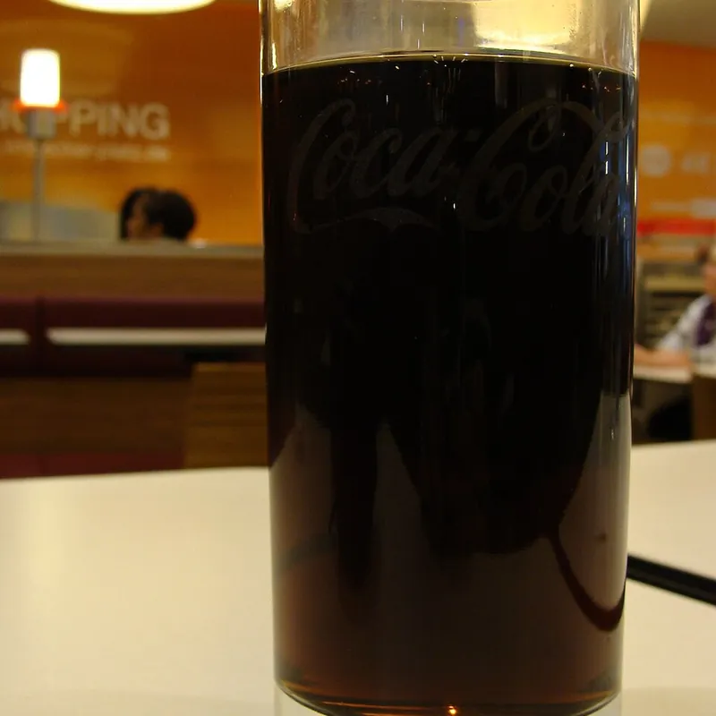
Photo by CherryX · Original and source information · CC BY-SA 3.0
Square crop, resize and WebP compression; adaptation under the same licence.
Local files: dish-coca-cola-0-5-1-60f5c67b.webp, dish-pepsi-2l-1-44c271de.webp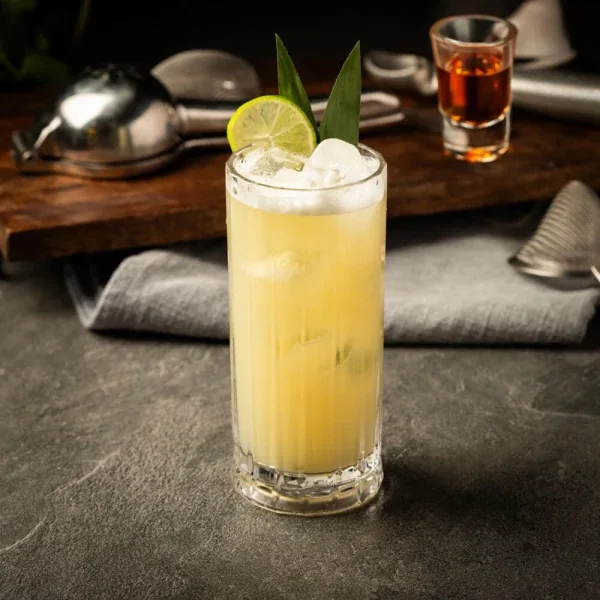
Photo by Achim Schleuning (E-Mail: comander02_de@yahoo.de) · Original and source information · CC BY-SA 3.0 de
Square crop, resize and WebP compression; adaptation under the same licence.
Local files: dish-cocktail-pina-colada-1-ae0c39a4.webp, dish-pi-a-colada-cocktail-1-38aaaf15.webp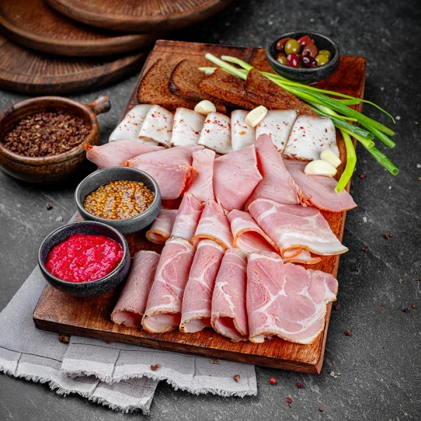
Photo by MOs810 · Original and source information · CC BY-SA 4.0
Square crop, resize and WebP compression; adaptation under the same licence.
Local files: dish-cold-cuts-appetizer-2-02d94c70.webp, dish-meat-platter-2-f8bef848.webp, dish-plato-with-pork-fat-2-80a61005.webp, meat-platter.webp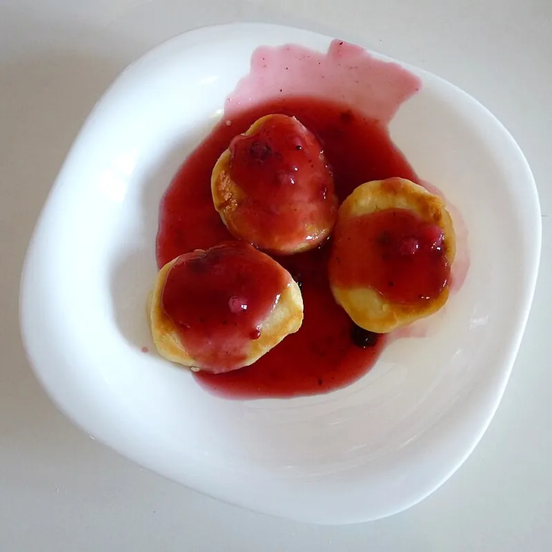
Photo by Kunetskiy · Original and source information · CC BY-SA 3.0
Square crop, resize and WebP compression; adaptation under the same licence.
Local files: dish-cottage-cheese-pancakes-3-f240cc84.webp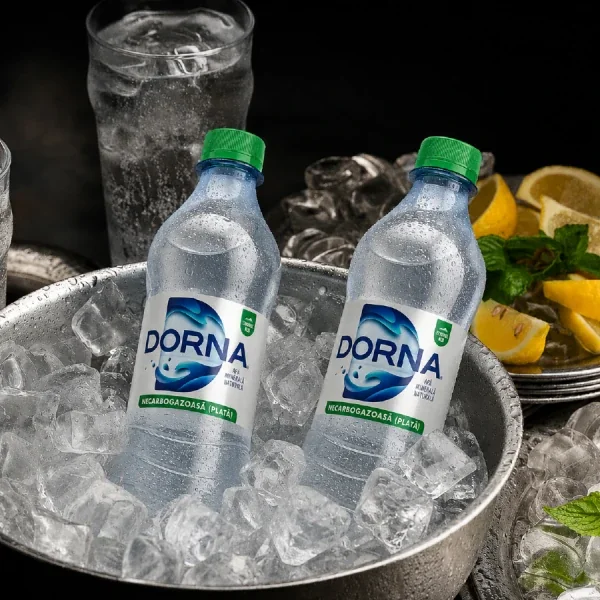
Photo by deavmi · Original and source information · CC BY-SA 4.0
Square crop, resize and WebP compression; adaptation under the same licence.
Local files: dish-dorna-carbo-0-5-1-6b639b6c.webp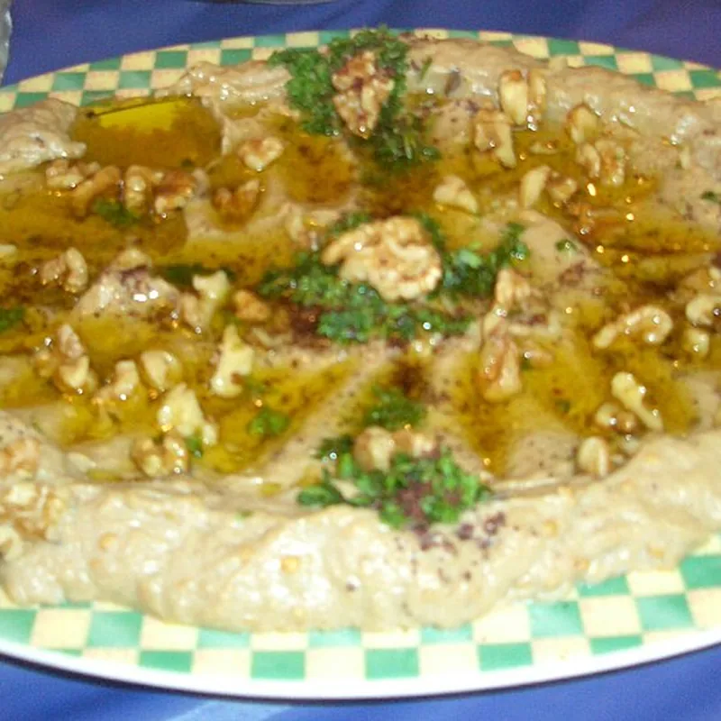
Photo by Basel15 at English Wikipedia · Original and source information · Public domain
Square crop, resize and WebP compression; adaptation under the same licence.
Local files: dish-eggplant-appetizer-2-a1c531fa.webp, dish-romanian-appetizer-2-7a839201.webp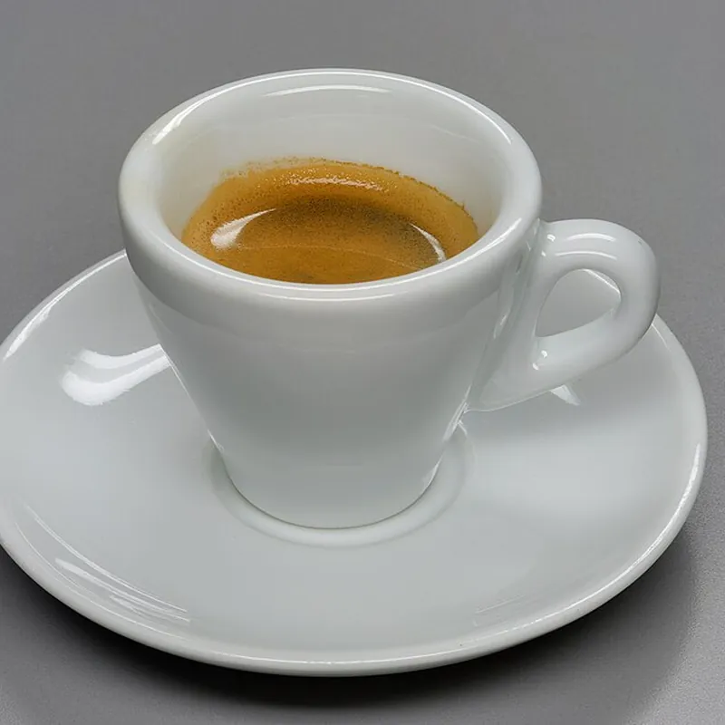
Photo by Berthold Werner · Original and source information · Public domain
Square crop, resize and WebP compression; adaptation under the same licence.
Local files: dish-espresso-1-18af814f.webp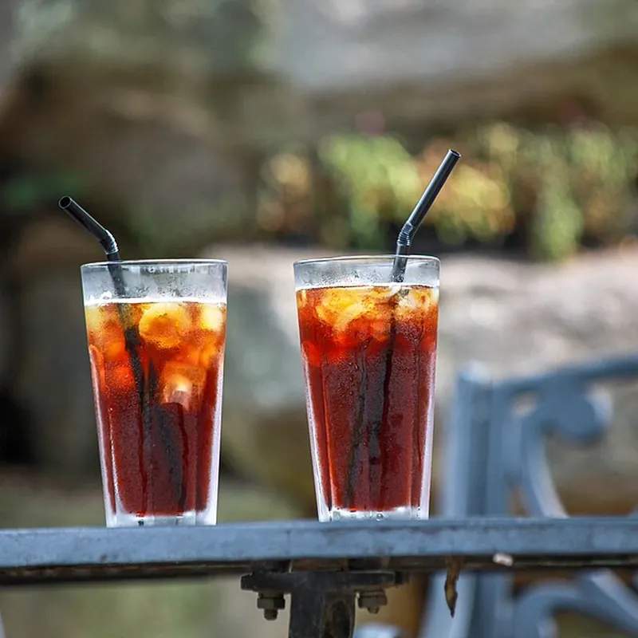
Photo by Kim Dae Jeung · Original and source information · CC0
Square crop, resize and WebP compression; adaptation under the same licence.
Local files: dish-espresso-tonic-1-c517ac6f.webp, dish-iced-latte-1-03606971.webp, dish-iced-latte-1-0d751292.webp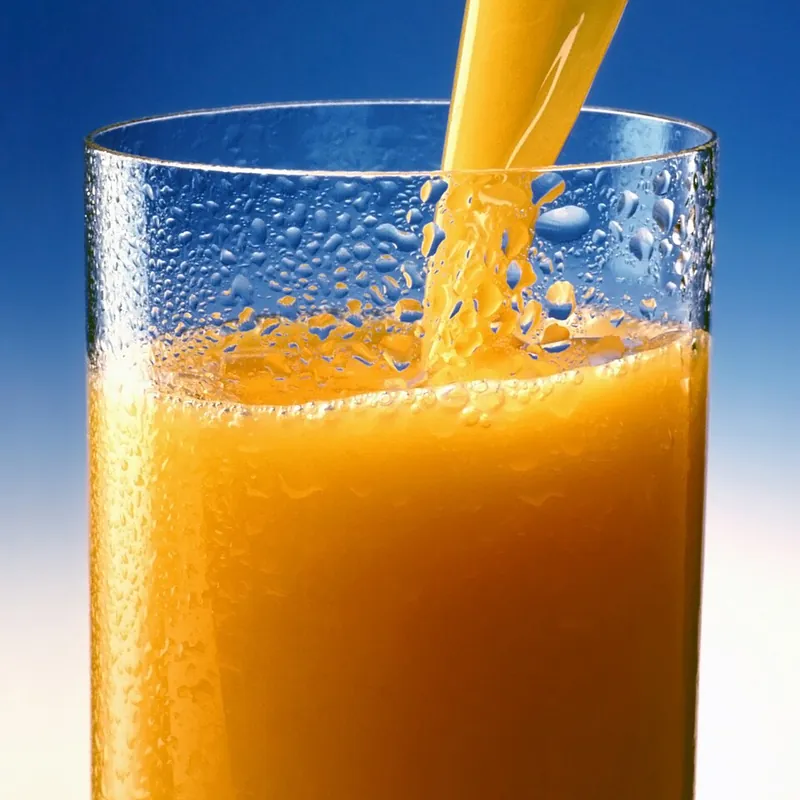
Photo by Agency of the United States Department of Agriculture Edited Version by: Arad · Original and source information · Public domain
Square crop, resize and WebP compression; adaptation under the same licence.
Local files: dish-fanta-0-5-1-058ba012.webp, dish-freshly-squeezed-grapefruit-juice-1-e00fe12d.webp, dish-freshly-squeezed-orange-juice-1-fd8df88b.webp, dish-mango-juice-1-3b4c7b6c.webp, dish-orangeade-1-3003be90.webp, dish-orangeade-1-l-1-6398ed0f.webp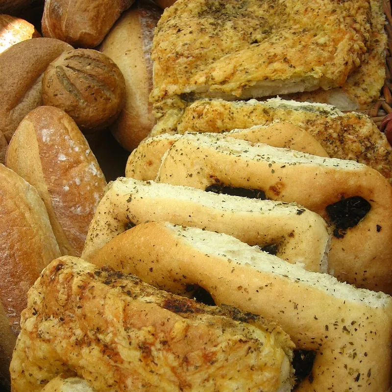
Photo by Jeremy Keith · Original and source information · CC BY 2.0
Square crop, resize and WebP compression; adaptation under the same licence.
Local files: dish-focaccia-1-3d42673b.webp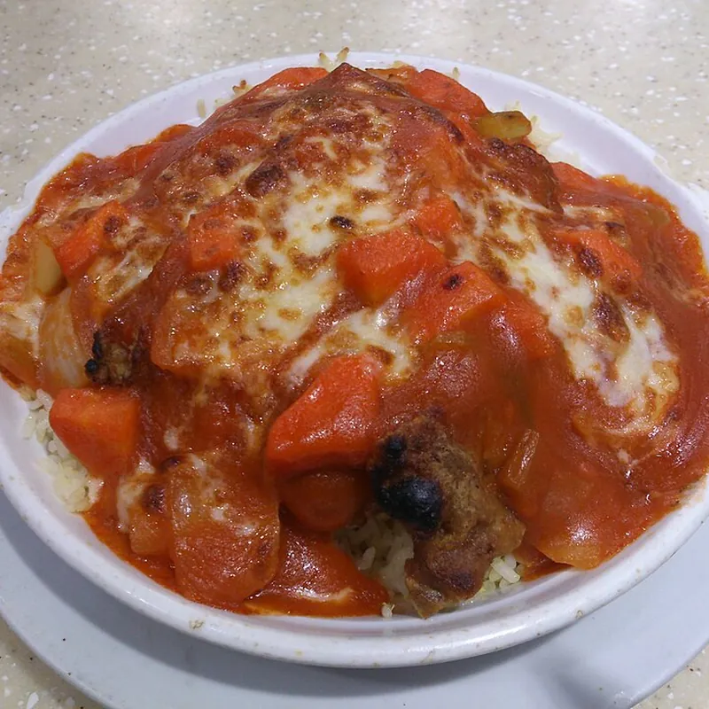
Photo by Ceeseven · Original and source information · CC BY-SA 3.0
Square crop, resize and WebP compression; adaptation under the same licence.
Local files: dish-french-style-meat-1-fe847efb.webp, dish-french-style-meat-for-sharing-1-1cacee54.webp, dish-pork-in-chili-sauce-with-rice-2-7400643d.webp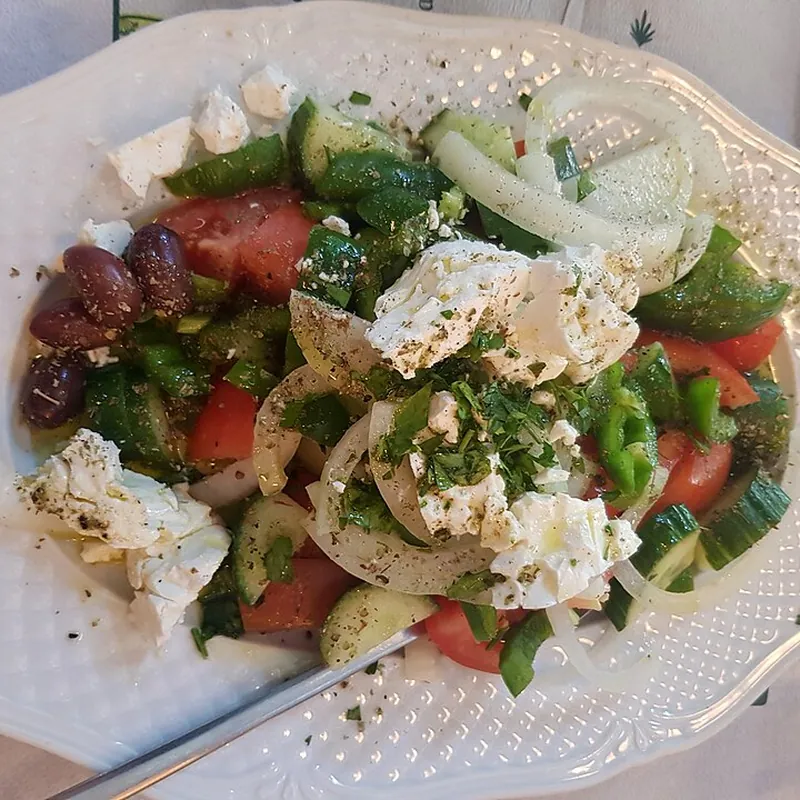
Photo by Armineaghayan · Original and source information · CC BY-SA 4.0
Square crop, resize and WebP compression; adaptation under the same licence.
Local files: dish-fresh-vegetable-platter-1-e738fece.webp, dish-veggie-salad-for-sharing-1-644a3db2.webp, dish-warm-beef-salad-1-5dcb2798.webp, salad.webp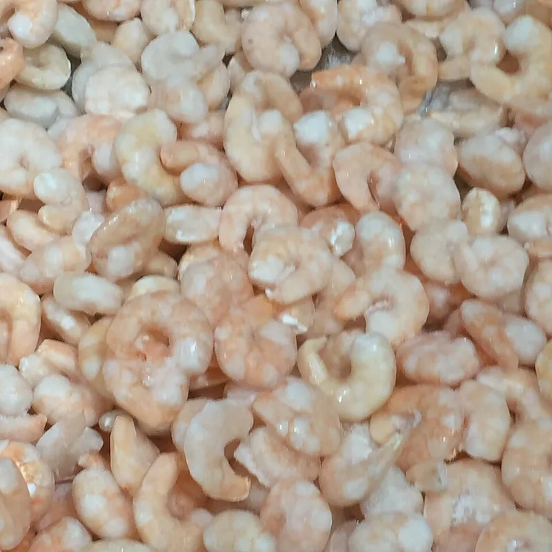
Photo by Fumikas Sagisavas · Original and source information · CC0
Square crop, resize and WebP compression; adaptation under the same licence.
Local files: dish-fritto-misto-1-5f9c7871.webp, dish-shrimp-in-cream-sauce-1-7c2c9516.webpPhoto by Isma Morocco · Original and source information · CC BY-SA 4.0
Square crop, resize and WebP compression; adaptation under the same licence.
Local files: dish-glazed-chicken-wings-1-92dc7377.webpPhoto by Nikodem Nijaki · Original and source information · CC BY-SA 3.0
Square crop, resize and WebP compression; adaptation under the same licence.
Local files: dish-guacamole-2-5ef30854.webpPhoto by Alfred Grupstra · Original and source information · CC BY-SA 4.0
Square crop, resize and WebP compression; adaptation under the same licence.
Local files: dish-ketchup-1-938b6e38.webpPhoto by Shisma · Original and source information · CC BY 4.0
Square crop, resize and WebP compression; adaptation under the same licence.
Local files: dish-margherita-pizza-2-df5b9e18.webp, dish-mini-pizza-1-aa640bf9.webp, margherita.webpPhoto by jules · Original and source information · CC BY 2.0
Square crop, resize and WebP compression; adaptation under the same licence.
Local files: dish-mayonnaise-1-000fa824.webp, dish-sour-cream-1-7f3c09c9.webp, dish-tartar-sauce-1-ba24c42d.webp, dish-zesty-sauce-1-6137b599.webp, sauces.webpPhoto by chee.hong from Kuala Lumpur, Malaysia · Original and source information · CC BY 2.0
Square crop, resize and WebP compression; adaptation under the same licence.
Local files: dish-nachos-1-f0c6603e.webpPhoto by jeffreyw · Original and source information · CC BY 2.0
Square crop, resize and WebP compression; adaptation under the same licence.
Local files: dish-neapolitana-pizza-2-c103a516.webpPhoto by Andy Li · Original and source information · CC0
Square crop, resize and WebP compression; adaptation under the same licence.
Local files: dish-pasta-carbonara-1-6d562dae.webpPhoto by Daderot · Original and source information · CC0
Square crop, resize and WebP compression; adaptation under the same licence.
Local files: dish-pepperoni-pizza-2-fd502a85.webp, pepperoni.webpPhoto by Arnold Gatilao · Original and source information · CC BY 2.0
Square crop, resize and WebP compression; adaptation under the same licence.
Local files: dish-pistachio-ice-cream-1-066cb1ee.webpPhoto by Nickispeaki · Original and source information · CC BY-SA 4.0
Square crop, resize and WebP compression; adaptation under the same licence.
Local files: dish-pizza-5-cheeses-2-b5efc7ca.webpPhoto by Phil Whitehouse from London, United Kingdom · Original and source information · CC BY 2.0
Square crop, resize and WebP compression; adaptation under the same licence.
Local files: dish-pizza-capricioasa-4-aac71911.webpPhoto by Daderot · Original and source information · CC0
Square crop, resize and WebP compression; adaptation under the same licence.
Local files: dish-pizza-funghi-2-6dae62a4.webpPhoto by HaJunkiyada · Original and source information · CC BY-SA 4.0
Square crop, resize and WebP compression; adaptation under the same licence.
Local files: dish-ravioli-with-ricotta-and-shrimp-1-fe4ac8b2.webpPhoto by Juerg Vollmer from Zürich, Schweiz · Original and source information · CC BY-SA 2.0
Square crop, resize and WebP compression; adaptation under the same licence.
Local files: dish-red-borscht-1-4dcc4390.webpPhoto by manray3 · Original and source information · CC BY-SA 2.0
Square crop, resize and WebP compression; adaptation under the same licence.
Local files: dish-ros-sangria-cocktail-1l-2-66d91bfc.webp, dish-ros-sangria-cocktail-2-fad29604.webpPhoto by Kimberly Vardeman from Lubbock, TX, USA · Original and source information · CC BY 2.0
Square crop, resize and WebP compression; adaptation under the same licence.
Local files: dish-salmon-steak-with-mashed-potatoes-1-c6d580e4.webpPhoto by Syced · Original and source information · CC0
Square crop, resize and WebP compression; adaptation under the same licence.
Local files: dish-sea-bream-fillet-with-bulgur-and-quinoa-1-35ad523d.webp, grilled-fish.webpPhoto by Infrogmation of New Orleans · Original and source information · CC BY 2.0
Square crop, resize and WebP compression; adaptation under the same licence.
Local files: dish-shakshuka-1-8186584e.webpPhoto by FranHogan · Original and source information · CC BY-SA 4.0
Square crop, resize and WebP compression; adaptation under the same licence.
Local files: dish-shrimp-pasta-1-918dfd72.webpPhoto by Thriving Vegetarian · Original and source information · CC BY 2.0
Square crop, resize and WebP compression; adaptation under the same licence.
Local files: dish-smiley-potatoes-1-b3058fbd.webpPhoto by NeoBatfreak · Original and source information · CC BY-SA 4.0
Square crop, resize and WebP compression; adaptation under the same licence.
Local files: dish-spinach-cream-soup-1-682aff9b.webpPhoto by Arnoldius · Original and source information · CC BY-SA 3.0
Square crop, resize and WebP compression; adaptation under the same licence.
Local files: dish-strawberry-ice-cream-1-216d243f.webpPhoto by Dicemanic · Original and source information · CC BY 2.0
Square crop, resize and WebP compression; adaptation under the same licence.
Local files: dish-strawberry-milkshake-1-2233a50e.webpPhoto by Navneet Sharma · Original and source information · CC BY-SA 4.0
Square crop, resize and WebP compression; adaptation under the same licence.
Local files: dish-tiramisu-1-1519cbc6.webp, tiramisu.webpPhoto by Ansh014 · Original and source information · CC BY-SA 4.0
Square crop, resize and WebP compression; adaptation under the same licence.
Local files: dish-tuna-salad-1-9e836c13.webpPhoto by Petar Milošević · Original and source information · CC BY-SA 4.0
Square crop, resize and WebP compression; adaptation under the same licence.
Local files: garden-pizza.webpPhoto by Sdkb · Original and source information · CC BY-SA 4.0
Square crop, resize and WebP compression; adaptation under the same licence.
Local files: starter.webp


.jpg){kind=link}


.jpg){kind=link}

.jpg){kind=link}


.jpg){kind=link}


.jpg){kind=link}


.jpg){kind=link}